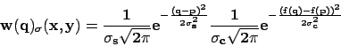

DESCRIPTION
The basic idea underlying bilateral filtering is to do in the
range of an image what traditional filters do in its domain.
Two pixels can be close to one another, that is, occupy nearby spatial location,
or they can be similar to one another, that is, have nearby values,
possibly in a perceptually meaningful fashion.
Bilateral filter takes both into count: the spatial and the color part. Both are
weighted by Gaussian distribution.

where
w(q) -- weight of this pixel
q, p -- position of the central pixel and of calculated pixel in neighborhood
f(q), f(p) -- values of the central and neighborhood pixel
Ss, Sc -- spatial and color (value) sigma
NOTE: Part 1/(S*sqrt(2*pi)) is not taken into count
(is set to
1)
SEE ALSO
Bilateral Filtering for Gray and Color Images
r.neighbors
r.mapcalc
r.mask
r.mfilter
AUTHOR
Jachym Cepicky, Ustav geoinformacnich technologii, Brno
Last changed: $Date: 2009-01-27 20:48:14 $